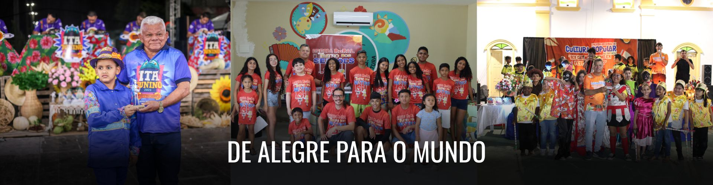
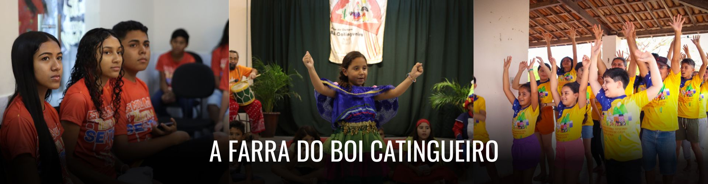
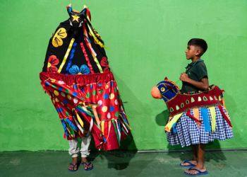
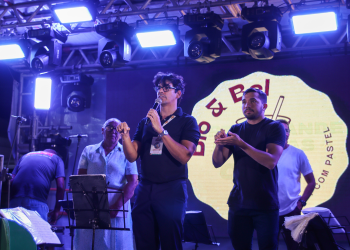

O que fazemos


25
Anos de
Associação
Associação
15
Anos de
Ponto de Cultura
Ponto de Cultura
Do Sonho Coletivo à Transformação
"Ninguém se salva sozinho."
Nossa história nasce da coragem de quem, em 2001, decidiu não aceitar a escassez como destino. Professores, famílias e jovens de Alegre uniram forças com uma certeza: a cultura é uma força viva capaz de mudar trajetórias.

Cultura que salva, educa e transforma.
Localização e Sobre
DE ALEGRE PARA O MUNDO!
O Ponto de Cultura Boi Catingueiro é uma iniciativa que celebra e preserva as tradições culturais brasileiras. Inspirado no universo do bumba meu boi e das raízes sertanejas, o projeto promove atividades que integram música, dança, teatro e literatura.
Nossa Galeria